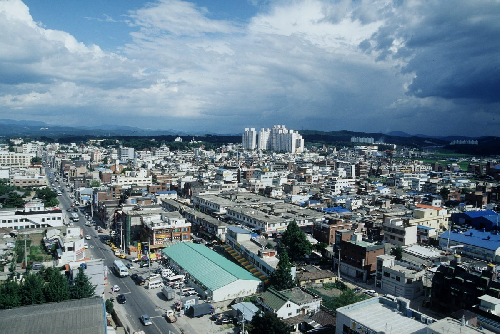

여주 구양리 '마을 전체가 주인' 1MW 태양광…담보 벽은 신협 4억2,000만 원으로 넘었다

법인격 없는 행정리는 사회적협동조합으로 사업…20년간 매달 약 1,000만 원 순수익 구조, 수익은 가구별로 나누지 않고 무료 점심·마을버스에
경기 여주시 세종대왕면 구양리는 정책자금 지원 대상에 뽑히고도 시중은행이 토지·부동산 담보를 요구해 대출이 막히자, 모자란 4억2,000만 원을 안산단원신협의 사회적경제 대출로 메워 개인 출자자가 아닌 마을이 100% 소유한 1MW(1,000kW) 태양광 발전소를 세웠다. 약 70가구, 140명 남짓이 벼농사를 짓는 이 마을은 산업통상자원부가 2021년 12월 공고한 '햇빛두레 발전소' 시범사업에 응모해 2022년 2월 시범마을로 뽑혀 총사업비의 90%까지 연 1.75%(5년 거치 10년 상환) 융자와 주민참여형 REC 가중치 0.2 우대를 약속받았지만, 경기도의 이자차액 보전·금리 지원까지 더하고서야 자금난을 넘겼고, 당시 함께 뽑힌 전국 6개 시범마을 가운데 5곳은 금융·담보 문제로 중도에 손을 뗀 것으로 알려졌다. 행정리는 법인격이 없어 인허가와 발전사업자 등록, 대출의 주체가 될 수 없기 때문에 마을은 사회적협동조합을 세워 사업을 맡겼고, 발전소는 2024년 1월 착공해 4월 완공됐으며 6월부터 매달 발전 수익이 마을 통장으로 들어오고 있다. 대출 원리금과 인버터 교체 적립금, 보험료, 안전관리비를 빼고도 앞으로 20년 동안 매달 약 1,000만 원의 순수익이 나도록 짜인 구조로, 마을은 이를 가구별로 나누지 않고 조리원 2명과 노인일자리 3명을 둔 마을 식당의 매일 무료 점심과 유급 사무장이 모는 9인승 '행복버스'에 쓰지만, 식당에만 매달 400만~500만 원이 들어 중부내륙고속도로 법면 경사지 1MW, 마을 공용주차장, 농어촌공사 비축농지 400kW 규모 햇빛소득마을 2차 사업을 추가로 신청했다. 전주영 구양리 이장은 개별 출자 방식으로 가면 출자한 사람만 이익과 결정권을 갖고 처음에 반대한 주민은 빠져 마을 안에 불평등이 생긴다며, 마을자치회가 협동조합을 실질적으로 이끌고 이익을 모든 주민이 누리도록 법과 제도를 고쳐야 한다고 말했다. 최재관 한국에너지공단 전 이사장은 인허가와 협동조합 설립, 금융 상담을 한 창구에서 돕는 지자체 전담 조직과 공공부지 우선 제공을 제안했다.
시민에너지 관점
정책자금 대상에 뽑히고도 담보가 없어 6곳 가운데 5곳이 물러난 것으로 알려진 일은, 마을발전소를 가로막는 것이 햇빛이나 땅보다 돈을 빌리는 문턱이라는 점을 보여 준다. 담보 없는 마을에 돈을 빌려주면 부실이 생긴다는 걱정이 나올 수 있지만, 1MW 발전소가 20년 동안 매달 내는 순수익 구조 자체가 상환 재원이고, 스코틀랜드 정부도 지역사회 재생에너지 지원 제도(CARES)로 공동체 사업이 가장 위험한 초기 단계를 넘도록 대출과 보조금을 대 왔다. 마을 전체가 주인일 때 처음 반대한 주민까지 점심상에 함께 앉게 된다는 구양리의 경험은, 소유 구조가 곧 마을 공동체를 지키는 장치라는 뜻이다. 1·2차 공모로 523곳이 햇빛소득마을에 뽑힌 지금, 정부와 지자체는 발전 수익을 담보로 인정하는 공공 보증과 행정리가 직접 사업 주체가 될 수 있는 법적 길부터 열어야 한다.
출처: 용인시민신문 2026-11-05 함승태 원문 보기
驪州・九陽里の「村全体が持ち主」の1MW太陽光…担保の壁は信協の4億2,000万ウォンで越えた
法人格のない行政里は社会的協同組合で事業…20年間毎月約1,000万ウォンの純収益が出る構造、収益は世帯ごとに分けず無料の昼食と村のバスに
京畿道驪州市世宗大王面の九陽里（クヤンニ）は、政策資金の支援対象に選ばれながら市中銀行に土地・不動産の担保を求められて融資が止まると、不足した4億2,000万ウォンを安山檀園信協の社会的経済向け融資で補い、個人の出資者ではなく村が100%所有する1MW（1,000kW）の太陽光発電所を建てた。約70世帯、140人余りが稲作を営むこの村は、産業通商資源部が2021年12月に公告した「ひだまり共同発電所（ヘッピットゥレ発電所）」モデル事業に応募して2022年2月にモデル村に選ばれ、総事業費の90%まで年1.75%（5年据え置き・10年返済）の融資と住民参加型REC加重値0.2の優遇を約束されたが、京畿道の利子差額補填・金利支援を加えてようやく資金難を乗り越えた。当時一緒に選ばれた全国6つのモデル村のうち5カ所は、金融・担保の問題で途中で断念したとされる。行政里は法人格がなく、許認可や発電事業者登録、融資の主体になれないため、村は社会的協同組合を設立して事業を担わせ、発電所は2024年1月に着工、4月に完成し、6月から毎月の発電収益が村の口座に入っている。融資の元利金、インバーター交換の積立金、保険料、安全管理費を差し引いても今後20年間毎月約1,000万ウォンの純収益が出る構造で、村はこれを世帯ごとに分けず、調理員2人と高齢者雇用3人を置いた村の食堂の毎日の無料昼食と、有給の事務長が運転する9人乗り「幸せバス」に充てているが、食堂だけで毎月400万～500万ウォンかかるため、中部内陸高速道路の法面1MW、村の共用駐車場、農漁村公社の備蓄農地を使う400kW規模の「ひだまり所得村」2次事業を追加で申請した。全周永（チョン・ジュヨン）九陽里長は、個別出資方式では出資した人だけが利益と決定権を持ち、最初に反対した住民は外れて村の中に不平等が生まれるとして、村の自治会が協同組合を実質的に率い、利益を全住民が享受できるよう法と制度を改めるべきだと述べた。崔載寛（チェ・ジェグァン）前韓国エネルギー公団理事長は、許認可・協同組合設立・金融相談を一つの窓口で支援する自治体の専任組織と、公有地の優先提供を提案した。
市民エネルギーの視点
政策資金の対象に選ばれながら担保がなく6カ所中5カ所が退いたとされることは、村の発電所を阻んでいるのが日差しや土地よりも、お金を借りる敷居だということを示している。担保のない村に貸せば不良債権が生じるとの懸念もありうるが、1MW発電所が20年間毎月生む純収益の構造そのものが返済財源であり、スコットランド政府も地域社会再生可能エネルギー支援制度（CARES）で、コミュニティー事業が最もリスクの高い初期段階を越えられるよう融資と補助金を出してきた。村全体が持ち主であれば最初に反対した住民まで同じ食卓を囲むようになるという九陽里の経験は、所有構造こそが村の共同体を守る仕組みだということだ。1・2次公募で523カ所が「ひだまり所得村」に選ばれた今、政府と自治体は発電収益を担保と認める公的保証と、行政里が直接事業主体になれる法的な道からまず開くべきだ。
出典: 龍仁市民新聞 2026-11-05 ハム・スンテ 原文を読む
骊州九阳里"全村当家"的1MW太阳能电站：靠信协4.2亿韩元越过担保门槛
没有法人资格的行政里通过社会合作社开展项目；20年间每月约1,000万韩元纯收益的结构，收益不按户分配，用于免费午餐和村巴士
韩国京畿道骊州市世宗大王面九阳里虽被选为政策资金支持对象，却因商业银行要求土地或房产担保而贷款受阻，最终通过安山檀园信协的社会经济贷款补足了4.2亿韩元缺口，建成了一座由全村而非个别出资人100%拥有的1MW（1,000kW）太阳能电站。这个约70户、140余人以种水稻为生的村庄，应征产业通商资源部2021年12月公告的"阳光互助电站"示范项目，于2022年2月入选示范村，获得最高可达总投资90%、年利率1.75%（宽限5年、10年还清）的贷款和居民参与型REC权重0.2的优惠承诺，但直到再加上京畿道的利差补贴和利率支持，才渡过资金难关。据称，当时一同入选的全国6个示范村中有5个因融资和担保问题中途放弃。由于行政里没有法人资格，无法成为许可审批、发电企业登记和贷款的主体，村里成立了社会合作社来承担项目；电站于2024年1月开工、4月竣工，从6月起每月的发电收益进入村集体账户。扣除贷款本息、逆变器更换准备金、保险费和安全管理费后，电站在今后20年里每月可产生约1,000万韩元纯收益；村里不把这笔钱按户分配，而是用于雇有2名专职厨师、并对接3个老人岗位的村食堂每天提供免费午餐，以及由带薪村务干事驾驶的9座"幸福巴士"。不过仅食堂每月就要花400万至500万韩元，村里因此又申请了中部内陆高速公路边坡1MW、村公用停车场以及利用农渔村公社储备农地的400kW规模"阳光收入村"第二期项目。九阳里里长全周永表示，若采用个人出资方式，只有出资者能分享收益和决策权，起初反对的居民会被排除在外，在村内造成不平等；应修改法律和制度，让村自治会实际主导合作社，使全体居民共享收益。韩国能源公团前理事长崔载宽则建议，由地方政府设立一站式专门窗口，统一协助许可审批、合作社设立和融资咨询，并优先提供公共用地。
市民能源视角
据称6个示范村中有5个虽获政策资金资格却因缺乏担保而退出，这说明阻碍村级电站的与其说是阳光或土地，不如说是借钱的门槛。有人可能担心向没有担保的村庄放贷会产生坏账，但1MW电站20年间每月产生纯收益的结构本身就是还款来源；苏格兰政府也通过社区与可再生能源支持计划（CARES）提供贷款和补助，帮助社区项目度过风险最高的初期阶段。九阳里的经验表明，全村当家时，连起初反对的居民也会坐到同一张饭桌旁，所有权结构本身就是守护村庄共同体的机制。在第一、二轮公募已有523个村入选"阳光收入村"的今天，政府和地方政府应首先开辟把发电收益认可为担保的公共担保机制，以及让行政里能直接成为项目主体的法律途径。
来源: 龙仁市民新闻 2026-11-05 Ham Seung-tae 查看原文
Yeoju's Guyang-ri builds a 1 MW solar plant owned by the whole village, clearing a collateral wall with a 420 million won credit union loan
With no legal personality, the village runs the project through a social cooperative; the plant is structured to net about 10 million won a month for 20 years, spent on free lunches and a village bus rather than split among households
Guyang-ri, a village in Sejongdaewang-myeon, Yeoju, Gyeonggi Province, was selected for state policy loans but stalled when commercial banks demanded land or property as collateral; it covered the 420 million won shortfall with a social-economy loan from Ansan Danwon Credit Union and built a 1 MW (1,000 kW) solar plant owned 100% by the village rather than by individual investors. The village of about 70 households and some 140 mostly rice-farming residents applied to the "Haetbit Dure" (sunshine mutual-aid) power plant pilot announced by the Ministry of Trade, Industry and Energy in December 2021 and was chosen as a pilot village in February 2022, with promised loans of up to 90% of project costs at 1.75% a year (five-year grace, ten-year repayment) and a 0.2 REC weighting bonus for resident-participation projects, but it only overcame its funding gap after adding Gyeonggi Province's interest-difference compensation and rate support. Five of the six pilot villages chosen nationwide at the time reportedly dropped out midway over financing and collateral problems. Because an administrative village (haengjeong-ri) has no legal personality and cannot hold permits, register as a power producer or borrow, Guyang-ri set up a social cooperative to run the project; construction began in January 2024, finished in April, and monthly power revenue has flowed into the village account since June. After loan repayments, an inverter replacement reserve, insurance and safety management costs, the plant is structured to net about 10 million won a month over the next 20 years, which the village does not divide among households but spends on daily free lunches at a village canteen staffed by two hired cooks and three seniors in public job programs, and on a nine-seat "Happiness Bus" driven by a paid village manager; with the canteen alone costing 4 million to 5 million won a month, the village has also applied for a second round of the Haetbit Sodeuk Maeul (sunshine income village) program covering 1 MW on a Jungbu Naeryuk Expressway embankment slope, a village parking lot, and a 400 kW project on farmland banked by the Korea Rural Community Corporation. Guyang-ri head Jeon Ju-young said individual investment would give profits and decision-making power only to those who invested, leaving out residents who first opposed the plan and creating inequality within the village, and called for laws and rules to let the village self-governing council effectively steer the cooperative so that all residents share the benefits. Choi Jae-kwan, former head of the Korea Energy Agency, proposed that local governments set up a one-stop desk to help with permits, cooperative formation and financing, and offer public land first.
Citizen Energy View
That five of six villages reportedly withdrew despite qualifying for policy loans, simply for lack of collateral, shows that the main barrier to village power plants is not sunlight or land but access to credit. Some may worry that lending to villages without collateral invites bad debt, but the plant's 20-year stream of monthly net income is itself the repayment source, and the Scottish Government's Community and Renewable Energy Scheme (CARES) has long offered loans and grants to carry community projects through their riskiest early stage. Guyang-ri's experience, where whole-village ownership brought even early opponents to the same lunch table, shows that the ownership structure itself is what holds a community together. With 523 villages already chosen as sunshine income villages in the first two rounds, the government and local authorities should first open public guarantees that accept generation income as security and a legal path for administrative villages to act as project owners themselves.
Source: Yongin Simin Sinmun 2026-11-05 Ham Seung-tae Read the original